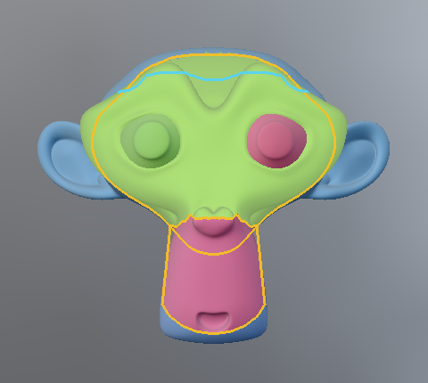
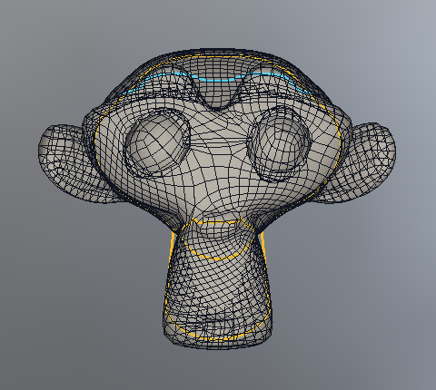
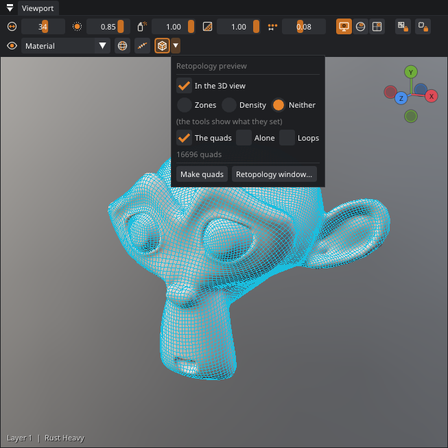
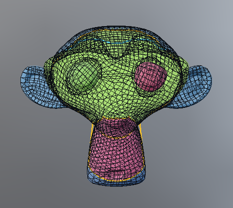
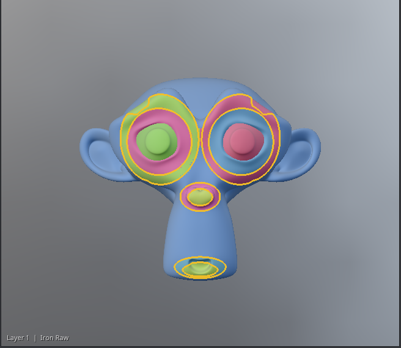
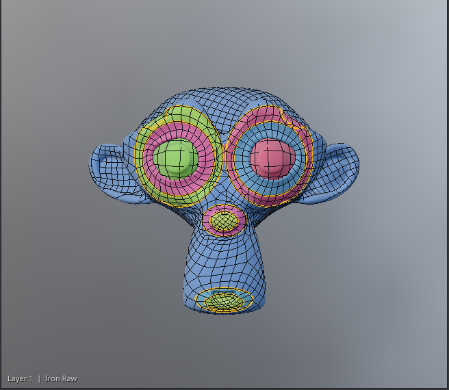
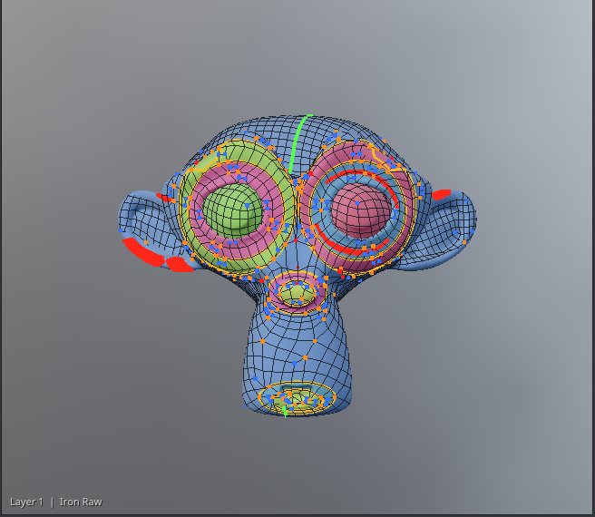
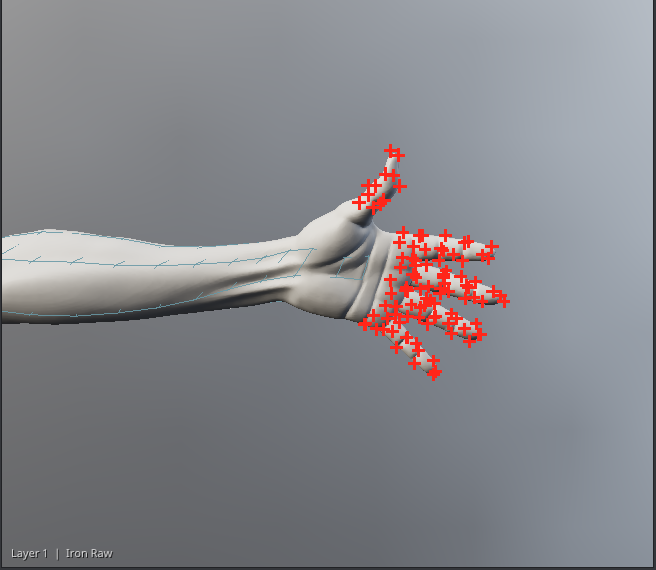
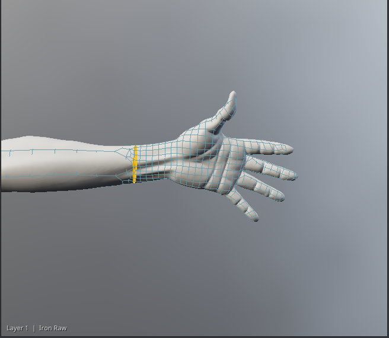
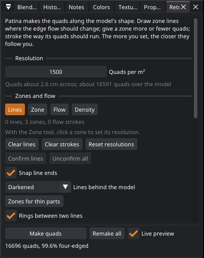

Retopology: clean quads over a high-poly model
Patina makes a low-poly model of quads over a sculpt or a scan. The quads follow the model's shape on their own, and you steer them: zone lines where the edge flow should change (each becomes an edge loop), zones with a resolution of their own, flow strokes for more edge loops (or only which way the quads run), and a density brush. It is not a one-button remesher: the more you set, the closer the quads follow you.


Starting
- Open the high-poly model (File › Open, or Send to Patina from Blender).
- Pick a retopology tool in the tool strip's Retopo group: Lines, Zone, Flow or Density. They are always there; the Retopology window opens as a tab if it was closed (Retopology › Retopology Window opens it too).
- Set the resolution: Quads per m². Model units are meters; the line under it says how wide a quad is and about how many quads the whole model gets. 2,500 per m² is 2 cm quads; 10,000 is 1 cm.
- The quads appear by themselves (the live preview, drawn faintly), a moment after you pick a retopology tool and after every change. With nothing drawn yet, they already follow the shape, so it is a good first look.
- Draw zone lines where the result should change, set resolutions, add flow strokes; the preview follows.
- Click Make quads to keep them: the preview is made the same way, so an up-to-date preview is kept at once (otherwise the quads are made in the background, a few seconds for a model of two million triangles). The quads show over the model as lines, or on their own with Alone.
Seeing it with any tool: the Retopology preview button

The retopology tools show what they set while you use them. To keep the zones and the quads on the model while you do something else, turn on Retopology preview in the bar over the 3D view. It stays on until you turn it off, whatever tool is chosen and whichever panel is in front, and it is kept between sessions.
- The arrow beside it chooses what shows: Zones, Density or Neither, The quads, Alone, Red marks and Loops (the same settings as the window's Show). It also has Make quads and opens the Retopology window.
- Make quads turns the preview on, so the quads you asked for show.
- It is also in View › Retopology Preview, in the View menu of the 3D view's right-click menu and in the Retopology menu. You can give it a shortcut in Edit › Keyboard shortcuts (Retopology preview on / off).
- While it is on, the model's own wireframe and seams are hidden so they don't cover the quads.
Before 0.37 the zones and the quads showed only while the Retopology window was in front. Switching off the Retopology preview button feature (Edit › Preferences › Features) brings that back.
The live preview
While a retopology tool is in use, the Retopology preview is on, or the Retopology window is in front, Patina makes the quads again by itself about a third of a second after you stop changing something: a line, a stroke, a zone's resolution, the density, the quads per m². A change while it is working stops it and starts it again. The preview is made just as Make quads makes the quads, so what you see is what you keep; the window says Preview above its numbers until you keep them. Untick Live preview to make the quads only when you ask. On a big model the first preview takes longest; after that, drawing lines and strokes reuses the work.
Settings that ask for more than 150,000 quads (the window's count includes the zones and the density brush) get no live preview: Make quads still makes them, and the window warns that they may take minutes and many GB of memory. Patina runs only as many of QuadriFlow's tries at once as the memory allows, and a zone too big for the memory free is not tried: the window says so, and how much it would need. Nor is a zone asking for more than 250,000 quads, which QuadriFlow can't make in one piece: give it a lower resolution with the Zone tool.
Keeping the quads away from a change
Each change makes only the quads near it again: a few quads round the line or stroke you draw or take away, or round where you paint the density or change a zone's resolution (the whole inside of a small new loop too). Everything further off stays exactly as it was, so a part that came out clean stays clean while you work on another. A row of faces joins the new quads to the kept ones; it can leave a few more poles there than making everything again would.
Remake all, beside Make quads, makes all the quads again at once: the cleanest quads for everything as it is now, though any part may come out different. Use it when you have finished drawing, or when a part came out badly. Untick Keep quads away from changes (under the zone settings) to make all the quads again after every change, as Patina did before 0.23. The setting is kept with the model.
The window says how many of the vertices have four edges (the rest are poles: three, five or more edges). Without lines, most models come out between 95 and 99%. Each line, and each change of resolution, adds a few poles, because an edge loop has to start or end somewhere.
Zone lines
The Lines tool draws on the model's surface, wherever the pen goes, like a grease pencil: round the eyes and the mouth, along the cranium, round the base of the ears, round the wrists and the neck. Each line becomes an edge loop of the quads, running exactly along it. Each stroke is one undo step.
- Lines meet exactly. Start or end a stroke near another line and it starts or ends on that line: a white ring shows where before you press, and while you draw. In tight folds (the lips, between the fingers and toes, the crotch) that can pull a line onto its neighbor: untick Snap line ends in the window and the ends stay where you draw them.
- Closing. End a stroke where it began (a white ring shows at its start) and it closes into a loop.
- Overshooting is fine. Where a line runs on a little past the last line it crosses (less than a quad), the loose end is left out of the quads.
- Shift+click on an arm, a leg, the neck, the waist or a finger draws a line right round it there, across the way it runs: no need to turn the model round to draw the back. Hold Shift and rest the pointer to see the line first (a label by the pointer says which kind it is). Where there is no part to go round (a breast, the face, a knee), it draws the cut facing you: where a plane through the point you click, parallel to the screen, cuts the model. Look at a breast from the front and Shift+click near its base for a ring round it; look at the face from the front and Shift+click in front of the ear for a line round the face. The deeper the point you click, the wider the line. Shift+wheel switches between round the part and facing you. With the mirror buttons on, the mirror image comes too. (Noses and lips don't work this way yet: the cut runs on into the forehead.)
- Ctrl+click on a line takes it away.
- Confirming lines. When a part is done, Confirm lines in the window confirms every line so far: they turn a darker brown and new lines never snap to them, so you can draw right beside them. They still make zones and edge loops. Ctrl+Shift+click a line to confirm or unconfirm just that one; Unconfirm all undoes the lot. Where a confirmed line and an unconfirmed one are both under a Ctrl+click, the unconfirmed one goes.
A closed line, or lines that meet or cross to close a region, split the model into zones. The model shows the zones in color while a retopology tool is in use, and the lines in yellow (flow strokes in blue). Lines behind the model in the window says how the parts of lines on the far side are drawn: Darkened (thin and faint, the default), Hidden, or Shown as if the model were glass. A line that doesn't close a region still makes an edge loop; it just doesn't split off a zone.
While you draw a line (or a flow stroke, or paint density) everything else waits, so the drawing gets the whole machine: the 3D view shows its last picture under the line (nothing in it changes), the UV Editor keeps its picture, and the live preview stops and starts again when you let go.
Zones and their resolution

With the Zone tool, click a zone to choose it. The slider above the viewport (and in the window) sets its resolution: ×2 gives it twice as many quads per m² as the rest, ×0.5 half. Each drag of the slider is one undo step; Reset resolutions sets every zone back to ×1 and clears the density brush (one undo step too). A line drawn inside a zone splits it into zones that keep its resolution: give the head ×8 and then draw the eyes, and the eyes are ×8 too.
Zones of different resolution are made apart, each at its own size, with its lines as edge loops. Where they meet, the coarser side's row of quads along the line is replaced by a row that steps from one count to the other in three-to-one steps (three edges on one side, one on the other: four quads and two vertices with three edges). When the counts differ by an odd number, one triangle makes up the difference.
The resolution goes from ×0.25 to ×32: fingers, for instance, need about six quads round them, which on a body at 4,000 quads per m² means a hand zone at about ×16. A big step between neighboring zones (more than about ×5) is made in two or three rows of steps, so it stays all quads.
A zone smaller than about four of its own quads can't hold the loops its lines ask for: the window names such zones and marks them in red. Draw their lines further apart, or give them (or the zone round them) a higher resolution.
Where three zones of different resolution meet (or a zone line meets an open edge of the model), each stretch of line between such points is joined on its own, and the small hole left where they meet is filled with quads. A part of a zone too thin or too pinched for its own quads (where two lines almost touch, or the tip of a sharp corner) is given to the zone beside it, since there is no room for the joining rows there. If a hole left where zones meet is bigger than a few quads, it is still filled, marked in red, and the window says so: moving the lines a little further apart there gives cleaner quads. Faces that come out folded (turned over against the surface or the faces round them) are smoothed out at the end, so where zones meet there are fewer pinches; a few can stay at sharp creases.
Rings between two lines


A zone between two lines (round an eye, round a mouth, along an arm between the wrist and the elbow) is filled with rings of quads that follow both lines, about a quad apart: as many rows as the narrow side holds. When one line is longer than the other, the rings keep one count while their quads stay between about half a quad and one and a half quads wide, as hand-made eye loops do; past that the count changes in three-to-one steps spread evenly between them. The counts are chosen for a whole chain of rings at once (the socket, the eye, the brow), so the steps go where the last ring meets the zone beyond it. A zone inside such a ring (the tip of a nose, the inside of the lips, an eyeball) is closed with a grid, as a modeler's grid fill, a ring in from its line: every vertex on the line and inside has four edges but the grid's four corners, the poles a disc needs, which sit just inside. Rings that touch share their line, so no joining row is needed there. A ring also takes the edge loop of the zone beside it when that loop runs along its line (a stray point or two is put onto the line), so the rings round an eye or a mouth meet the face without steps. Where three zones meet and a gap is left between their rows, it is closed with a grid too (cut in two at its narrowest point when it is long).
Only bands that pay count: a zone with much more surface than its width along its lines (a whole body between two wrist lines, say), or a band that would need many steps to get from one count to the other (round an eye socket, much longer outside than in), is made with the zone beside it, which turns its flow with a few poles of its own; its lines are still edge loops. Rings between two lines in the window turns rings off.
Fewer poles (on by default): after the quads are made, the number of quads along each run of edges is worked out again, so that a three-edged and a five-edged pole close together cancel out (a row of quads between them goes, or one comes in). The new quads are kept only when they have fewer poles and no more folded faces than the quads as first made, so it never makes things worse; on many models it changes nothing. Untick it to compare.
Lines for a character
A few lines in the right places do most of the work. These are the ones that pay on a head and a body:
- Eyes. One line along the edge of the eye opening (or round the eyeball) and one round the socket. The eye gets rings that keep their count, and the opening (or the eyeball) is closed with a grid, its poles inside. The band out to the socket line is made with the face round it when it is much longer outside than in, so the steps from one count to the other go where the face can take them; a small opening inside it then goes with the face too.
- Mouth. One line round the lips, one round the mouth: rings round the mouth, a grid inside the lips.
- Nose. One round the tip; one round the whole nose if you want rings there too.
- Arms and legs. A line round the wrist (Zones for thin parts draws it) and one round the top of the arm (or the thigh; Shift+click there with Lines): the limb between is a band and gets clean rings, with no twist. Without the top line a long limb's rows can wind round it like a thread on a screw (no pole shows it: tick Loops and follow a loop round the arm to check).
- The head. A line round the neck (Shift+click it) makes the head a zone of its own, so it can have more quads than the body.
Keep lines a quad or two apart: where two lines nearly touch there is no room for the rows that join their zones, and the window marks the spot. Tick Loops to check the result: the poles show as crosses, and the loop under the pointer lights up with its count.
Seeing the flow: loops and poles

Tick Loops (next to Alone) to see how the quads flow. Each pole (a vertex with three, five or more edges) shows as a small cross: blue with three edges, orange with five, red with more. Point at the quads and the edge loop under the pointer lights up all along, to where it ends at a pole or comes back round; the window says how many edges it has. Poles gathered along a line you drew show where the flow has to change there; moving the line, or giving the zones beside it closer resolutions, moves them.
Flow strokes
The Flow tool draws strokes on the model, the same way, that set which way the quads run where they are drawn: across the forehead, down the nose, along a muscle. A stroke that ends where it started closes into a loop. Ctrl+click a stroke to take it away. Each stroke is one undo step.
Each stroke becomes an edge loop that runs exactly where you drew it, as a zone line does, but it doesn't make a zone of its own: the resolution is the same either side of it. Rings drawn round a spot (a nipple, an eye) become loops round it. This is Strokes make edge loops, on by default (it shows with the Flow tool, in the window and above the viewport; the setting is kept with the mesh).
Untick it for strokes that only turn the quads:
- The quads right beside a stroke run along it (and across it), and the turn carries on through the zone until something else holds the quads: a line, another stroke, the zone's edge. One stroke on its own can turn a whole torso.
- The quads follow its direction, not its exact path, and they keep their size. So a circle of flow round a small spot comes out as a spiral, with poles where the rings need more edges further out.
- In a zone made as rings between two lines, or a disc closed with a grid, such strokes have no effect: those are laid out from their lines alone.
The density brush
The Density brush paints a multiplier on the quads per m² for fine tuning inside a zone: ×2 for more quads there, ×0.5 for fewer (the slider above the viewport, or in the window). It paints the surface under it, soft at its edge, and only the part it touches (not through to another part behind); the mirror buttons mirror it. Ctrl paints it back to ×1. The change in the quads is gentle: they grow or shrink gradually around what you paint, without edge loops of their own. For a clear step, use a zone.
Symmetry
With Mirror X, Y or Z on (in the window, or the mirror buttons), zone lines, flow strokes, the density brush and zone resolutions are mirrored across the model's middle (the middle of its bounding box), and so are the quads: they are made on one side and mirrored onto the other, so both sides match vertex for vertex. The halves meet along an edge loop down the middle.
- The side kept is the one with more of your lines on it (the bigger side when there are none), so lines drawn on one side only, with Mirror off, still count.
- The middle's loop. Where the model crosses the middle, an edge loop runs along it. A line you drew within half a quad of the middle is moved onto that loop there, so the two meet rather than leave a strip too narrow for a row of quads; so is the rest of the line that stays within a quad of the middle around that place. A line that runs close to the middle for a while (a breast's outline by the cleavage) then shares the middle's loop and leaves it across it, rather than at a slant that needs a pole where it and its mirror image meet. Zones that touch the middle are made like any other zone, not as rings or grids.
- A model that isn't the same on both sides. Each separate piece of the model is checked: a piece whose mirror image lies on the model (within half a quad, nearly all of it) is mirrored; one that isn't (hair worn to one side, a raised arm) keeps the quads made for it as they are, and the Retopology window says so. When no big piece is the same on both sides, the quads are made on the whole model, as with Mirror off, and the places where the sides differ are marked in red. Hair joined to the body counts as one piece with it.
- Where the quads can't follow the middle (a crease narrower than a quad), the faces across it are cut along it, so the halves always meet; a triangle or two can come out there. The walls of a crease along the middle narrower than a third of a quad (the cleft of the buttocks, the crotch) are pressed shut: the quads bridge it.
- Middle deadzone. A line that comes within this distance of the middle is taken to meet it there, and joins its mirror image into one line across the middle (like the clipping of Blender's mirror modifier). One whose both ends reach the middle becomes one closed loop with its mirror image. The default is 1% of the model's size.
- A stroke drawn across the middle keeps its longer side, mirrored, so the result is symmetric rather than two crossing copies. One drawn along the middle is its own mirror image.
- Ctrl+click on a line takes its mirror images away too.
Big models
A model with more than about 200,000 triangles (or far more detail than the quads need) is first made lighter: its own surface is simplified to triangles about a third of the quads' size (finer in zones of high resolution), keeping its shape, its separate fingers and its gaps; the quads are made on that and put back on the model's own surface. Loose specks smaller than about four quads are left out, and the window says how many triangles that was. A coarse model is the other way round: its triangles are split where the quads need them smaller.
Parts thinner than about a quad (fingers, strands of hair) can't be covered by quads that big, so they are left out: the window says how much of the surface that is, and red crosses mark where. Give those parts a zone with a higher resolution (fingers need about six quads round them), or let Patina do it:
Red crosses also mark places where zones meet in a tight spot (patched there), and, with Mirror on, places where the two sides of the model aren't the same. The notes under the last build in the window say which. The marks change nothing in the quads: untick Red marks (next to Alone) to hide them.
Zones for thin parts


Zones for thin parts (in the window, under the zone tools) finds the parts too thin for the quads as they are now: where fewer than about four quads would go round. For each one that is a tube (a finger, a hand, a toe) it draws a zone line round it where it meets the rest, a clean ring across the limb (round the wrist, say), and gives that zone a resolution for about six quads round it: ×2, ×4, ×8 or ×16. It is one undo step, and the lines and resolutions are yours to change like any others.
It leaves some parts as they are, and the status bar says how many: thin sheets such as locks of hair (wider than they are thick, so their quads can be as big as elsewhere), parts that would need more than ×16 (thin strands: give them a zone by hand if you want them), and parts with no clean ring round them (between toes, say).
Using the quads
- Export .obj... writes the quads to a file. The quads leave the retopology facing out, each turned like its neighbors, wherever they go.
- Send to Blender (with a linked object) adds the quads as a new object, name_retopo, in the same place as the linked one. Sending again updates it. This needs the 0.7 add-on.
- Use the quads as the model... saves them next to the high-poly (name_retopo.obj), opens them as the model you paint, with new UVs, and bakes the high-poly onto them (normals and ambient occlusion, as Bake › From a High-poly Mesh). With Bring the layers along (on by default), every layer comes onto the quads: a bake-down, into a new project, so the high-poly's project stays as it was saved. Off, the layers start afresh.
The lines, zones, resolutions, strokes and painted density are kept between sessions: open the same high-poly again and they are back.

From scripts
Everything is a command (see Commands): retopo_zone_line (lines from 3D
points), retopo_zones and retopo_zone (list the zones, set a resolution),
retopo_stroke (flow strokes), retopo_density, retopo_build, retopo_info,
retopo_view (with loops and loop_at, and preview for the Retopology
preview button), retopo_export, retopo_send_to_blender, retopo_use_as_model,
retopo_symmetry (the deadzone), retopo_rings (rings between two lines, on or off), retopo_fewer_poles (on or off), retopo_flow_loops (strokes make edge loops), retopo_snap (snapping line ends), retopo_confirm_lines, retopo_view lines_behind, retopo_thin_zones (zones for thin parts) and
retopo_clear; retopo_zone_line and
retopo_stroke take mirror ("x", "xy"...). The 0.13 commands for painted patches (retopo_patch, retopo_paint,
retopo_auto_patches, retopo_fill_gaps) still work: painted patches are zones too, and
retopo_build with method: "patches" fills each patch on its own as 0.13 did.